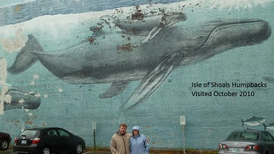

Looking at the online pictures of Isle of Shoals Humpbacks it looks wonderful and we were really looking forward to seeing it. Upon getting there though it was sad to see the shape the wall is in.
It’s clear this was a great wall when it was created but it has not aged well with a lot of the paint missing. An additional disappointment was seeing graffiti on the wall. This is the first time we’ve run into one of Wyland’s wall being defaced.
As often happens when we see these we wonder “Why this wall?”. This wall faces a parking lot that is not really visible from the main streets. If you did not know it was there it is unlikely you would run into it.
Cabot House- 64 Vaughn Mall
Portsmouth, New Hampshire
220 Feet Long x 40 Feet High
Dedicated June 14th, 1993
From @WylandFoundation on Instagram
*By the time Wyland reached Portsmouth, New Hampshire, the second city scheduled on the East Coast Tour, the artist and his crew knew they were in for a long, grueling 17 weeks. But the community’s exuberance and genuine interests in the Whaling Wall project picked up their spirits, resulting in a beautiful mural for the people of this city.
“This mural was critical to the tour because it was the first test of how fast we could finish a wall in one city and move on to the next city and get started.” Wyland recalls, “it was a real challenge, but we met it and were on our way. The reaction of the people of Portsmouth really helped to rejuvenate us.”
Portsmouth Mayor Eileen Foley presented Wyland with the key to the city, and the Shoals Marine Laboratory at the University of New Hampshire started a fundraising scholarship program in the artist’s name, “I was especially proud of the fundraiser,” Wyland says. “The money will be used to start a lectureship about marine mammals in the Gulf of Maine.”
The mural, painted on two walls of the Cabot House furniture store facing the Vaughn Mall parking lot, depicts three humpback whales that frequent the local waters, as well as a family of dolphins and school of tuna. “I must have talked to everyone in this town, especially the children,” Wyland claims. If I didn’t, I’m hoping the Whaling Wall will.”*